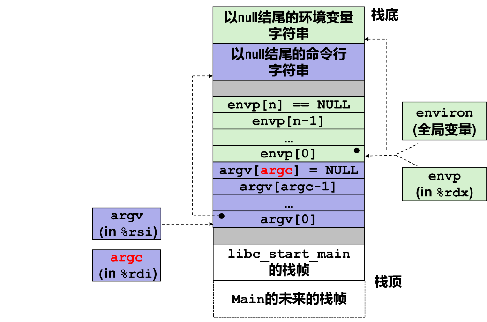

# 第6章 hello进程管理
# 进程的概念与作用
进程是一个执行中的程序的实例，每一个进程都有它自己的地址空间，一般情况下，包括文本区域、数据区域、和堆栈。文本区域存储处理器执行的代码；数据区域存储变量和进程执行期间使用的动态分配的内存；堆栈区域存储区着活动过程调用的指令和本地变量。
进程为用户提供了以下假象：我们的程序好像是系统中当前运行的唯一程序一样，我们的程序好像是独占的使用处理器和内存，处理器好像是无间断的执行我们程序中的指令，我们程序中的代码和数据好像是系统内存中唯一的对象。
# 简述壳Shell-bash的作用与处理流程
# 作用
Shell 是一个程序，是用户使用 Linux 的桥梁。Shell提供了一个界面，用户通过这个界面访问各个程序或操作系统内核的服务。
# 处理流程
- 从终端读入输入的命令。
- 将输入字符串切分获得所有的参数
- 如果是内置命令则立即执行；否则调用相应的程序为其分配子进程并运行
shell 应该接受键盘输入信号，如Ctrl C，Ctrl Z等，并对这些信号进行相应处理。
# Hello的fork进程创建过程
在终端中键入 ./hello.out 1190200703 管健男 1：
首先shell会对输入的命令行进行解析，因为 hello.out 不是一个内置的 shell 命令，所以解析之后shell判断用户的./hello.out命令的意图是执行当前目录下的可执行目标文件 hello.out。之后shell会调用 fork 函数创建一个新的运行的子进程。
父进程与子进程是并发运行的独立进程，内核能够以任意方式交替执行它们的逻辑控制流的指令。父进程与子进程之间最大的区别在于它们拥有不同的 PID。在子进程执行期间，父进程默认选项是显示等待子进程的完成。新创建的子进程几乎但不完全与父进程相同，子进程得到与父进程用户级虚拟地址空间相同的（但是独立的）一份副本，这就意味着，当父进程调用 fork 时，子进程可以读写父进程中打开的任何文件。
# Hello的execve过程
execve 函数在当前进程的上下文中加载并运行可执行目标文件filename=hello，且带参数列表argv和环境变量列表envp，只有当出现错误时，例如找不到hello，execve 才会返回到调用程序，所以 execve 调用一次、从不返回。 argv变量指向一个以NULL结尾的指针数组，其中每个指针都指向一个参数字符串。按照惯例argv[0]是可执行目标文件的名字。环境变量列表也是由一个类似的数据结构表示的，envp变量指向一个以NULL结尾的指针数组，其中每个指针指向一个环境变量字符串，每个字符串都是形如”name=value”的“名-值”对。

由于命令行键入了 ./hello.out 1190200703 管健男 1，所以argv分析如下：
| 数组元素 | 值 |
|---|---|
| argv[0] | ./hello.out |
| argv[1] | 1190200703 |
| argv[2] | 管健男 |
| argv[3] | 1 |
envp与shell的环境变量有关，在shell中（此处是bash）输入env，可以获得环境变量：
execve加载了hello后，它调用启动代码。启动代码设置栈，并将控制传递给新程序的主函数，该主函数的原型为：int main(int argc，char** argv，char** evnp)；
# Hello的进程执行
# 用户模式和内核模式
处理器通常使用一个寄存器提供用户模式和内核模式的区分，该寄存器描述了进程当前享有的特权，当没有设置模式位时，进程就处于用户模式中，用户模式的进程不允许执行特权指令，也不允许直接引用地址空间中内核区内的代码和数据；设置模式位时，进程处于内核模式，该进程可以执行指令集中的任何命令，并且可以访问系统中的任何内存位置。 上下文就是内核重新启动一个被抢占的进程所需要的状态，它由通用寄存器、浮点寄存器、程序计数器、用户栈、状态寄存器、内核栈和各种内核数据结构等对象的值构成。
# hello.out 的执行
一开始hello.out正常顺序执行。当发生抢占时，则进行上下文切换。上下文切换是由内核中调度器完成的，当内核调度新的进程运行后，它就会抢占当前进程，并进行：
- 保存以前进程的上下文
- 恢复新恢复进程被保存的上下文
- 将控制传递给这个新恢复的进程
初始时，hello.out运行在用户模式，进程调用 sleep 之后，触发系统调用（陷阱），从而陷入内核模式，内核处理休眠请求主动释放当前进程，并将 hello.out进程从运行队列中移出加入等待队列，定时器开始计时1秒，内核进行上下文切换将当前进程的控制权交给其他进程。 当1秒后，定时器将发送一个中断信号，此时进入内核状态执行中断处理，将 hello.out 进程从等待队列中移出重新加入到运行队列，成为就绪状态，hello进程就可以继续进行自己的控制逻辑流了。
根据hello.c中的for循环，hello.out将不断重复上述过程。
# hello的异常与信号处理
# 异常与信号处理概述
异常是控制流中的突变，用来响应处理器状态中的某些变化。状态变化被称为事件，事件可能与当前指令的执行直接相关。比如发生虚拟内存缺页、算术溢出，或者一条指令试图除零。另一方面，事件也可能和当前指令的执行没有关系，比如一个系统定时器产生的信号或者一个I/O请求完成。 在任何情况下，当处理器检测到有事件发生时，它就会通过一张叫做异常表的跳转表，进行一个间接过程调用，到一个专门设计用来处理这类事件的操作系统子 程序(异常处理程序)。当异常处理程序完成处理后，根据引起异常的事件的类型 来决定是否返回，或返回到哪一条指令。 hello执行过程中可能出现四类异常：中断、陷阱、故障和终止。
- 中断是来自I/O设备的信号，异步发生，中断处理程序对其进行处理，返回后继续执行调用前待执行的下一条代码，就像没有发生过中断。
- 陷阱是有意的异常，是执行一条指令的结果，调用后也会返回到下一条指令，用来调用内核的服务进行操作。帮助程序从用户模式切换到内核模式。
- 故障是由错误情况引起的，它可能能够被故障处理程序修正。如果修正成功，则将控制返回到引起故障的指令，否则将终止程序。
- 终止是不可恢复的致命错误造成的结果，通常是一些硬件的错误，处理程序会将控制返回给一个abort例程，该例程会终止这个应用程序。
# hello.out执行过程中的异常和信号
- 随意按下键盘时
此时程序正常执行。循环8次后，程序正常退出，被成功回收。ps结果如下：
在程序输出过程中按下 Ctrl Z：
- 当按下Ctrl Z后
shell 作为父进程，收到SIGTSTP 信号，该信号处理函数的默认操作是打印屏幕回显，将hello进程挂起。 通过 ps 命令我们可以看出 hello 进程没有被回收，此时他的后台job号是1：
调用 fg 1 将其调到前台，此时 shell 程序继续打印 hello 的输出：
程序结束后，正常退出并被回收。
- 当按下Ctrl C后
此时父进程收到 SIGINT 信号，信号处理函数的逻辑是终止 hello，并回收hello进程。
# 本章小结
本章节主要关注Shell如何运行 hello.out程序，以及对 hello.out进程执行过程的讨论。本章介绍了进程的概念与作用、 Shell及其工作流程，展示了fork函数如何创建新进程。之后展示了execve加载运hello程序的过程，以及 hello.out的进程执行过程，介绍进程时间片的概念、进程调度的过程、用户态与核心态的转换等。最后介绍了hello.out的异常与信号处理。
← 第5章 链接 第7章 hello 存储管理 →